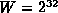

Data Structures and Algorithms
with Object-Oriented Design Patterns in Java
Data Structures and Algorithms
with Object-Oriented Design Patterns in JavaA very simple variation on the middle-square method that alleviates its deficiencies is the so-called, multiplication hashing method . Instead of multiplying the key x by itself, we multiply the key by a carefully chosen constant a, and then extract the middle k bits from the result. In this case, the hashing function is
What is a suitable choice for the constant a? If we want to avoid the problems that the middle-square method encounters with keys having a large number of leading or trailing zeroes, then we should choose an a that has neither leading nor trailing zeroes.
Furthermore, if we choose an a that is
relatively prime to W,
then there exists another number a' such that .
In other words, a' is the inverse
of a modulo W,
since the product of a and its inverse is one.
Such a number has the nice property that if we take a key x,
and multiply it by a to get ax,
we can recover the original key by multiplying the product again by a',
since axa'=aa'x=1x.
to W,
then there exists another number a' such that .
In other words, a' is the inverse
of a modulo W,
since the product of a and its inverse is one.
Such a number has the nice property that if we take a key x,
and multiply it by a to get ax,
we can recover the original key by multiplying the product again by a',
since axa'=aa'x=1x.
There are many possible constants which the desired properties. One possibility which is suited for 32-bit arithmetic (i.e., ) is . The binary representation of a is
This number has neither many leading nor trailing zeroes. Also, this value of a and are relatively prime and the inverse of a modulo W is .
The following code fragment illustrates the multiplication method of hashing:
public class MultiplicationMethod
{
static final int k = 10; // M==1024
static final int w = 32;
static final int a = (int) 2654435769L;
public static int h (int x)
{ return (x * a) >>> (w - k); }
}
The code is a simple modification of the middle-square version.
Nevertheless, the running time remains O(1).
 Copyright © 1998 by Bruno R. Preiss, P.Eng. All rights reserved.
Copyright © 1998 by Bruno R. Preiss, P.Eng. All rights reserved.